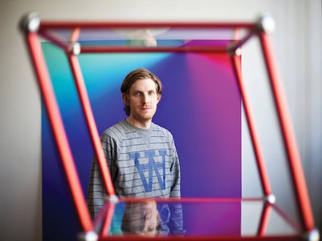

Who Is Cory Arcangel?

Cory Arcangel is a well-known modern artist who works in a range of mediums, including computer art, video, installation, and performance. He became well-known in the early 2000s as a consequence of his innovative use of technology and research into digital culture. Through his works, Arcangel addresses issues such as pop culture, nostalgia, comedy, and the relationship between art and technology. He also looks at consumer electronics and internet culture. His work has been exhibited in galleries and museums all over the world, and he has received several accolades and prizes for his contributions to modern art.